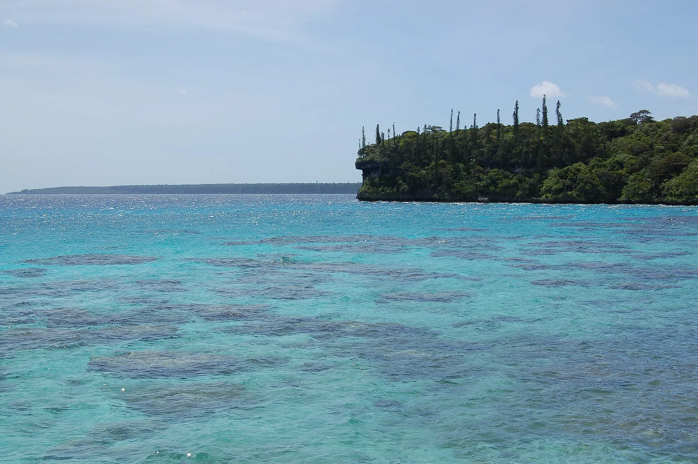

Baie de Jinek
Lifou, Nouvelle-Calédonie · snorkeling, baignade

Petite baie de Lifou où le récif corallien commence au pied de la falaise, près du village d’Easo. L’eau très claire en fait l’un des sites de snorkeling les plus connus des îles Loyauté.
- Lieu
- Lifou, Nouvelle-Calédonie
- Niveau
- Débutant
- Activités
- snorkeling, baignade
- Type d'eau
- Mer / océan
- Coordonnées
- -20.79, 167.12 (position approximative du secteur)
Dangers à connaître
- Corail proche de la surface : pas de palmes au ras du récif.
- Affluence les jours d’escale des paquebots.
Le conseil d'Ocean Buddy
Mets-toi à l’eau par l’accès aménagé et renseigne-toi sur place sur les règles fixées par la tribu.
Ouvrir dans Ocean Buddy Télécharger sur l'App Store
Source : Fiche Ocean Buddy · septembre 2026 · à vérifier localement.